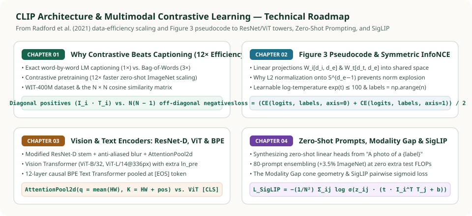

CLIP (Contrastive Language–Image Pre-training): From First Principles to Modern Vision–Language Models
Before CLIP (Contrastive Language–Image Pre-training, Radford et al., 2021), computer vision models were trained predominantly on fixed, closed-set category tables like ImageNet's $1{,}000$ synsets. A ResNet trained on $1{,}000$ integer IDs cannot recognize a "golden retriever skateboarding in the rain" or adapt to a medical or satellite benchmark without collecting new labeled examples and training a fresh linear head. CLIP shattered this closed-world bottleneck by training an Image Encoder and a Text Encoder jointly over $400\text{ million}$ internet $(I, T)$ pairs so that natural language itself becomes the classification head.
This five-part series inside the Deep Learning track builds CLIP from first principles—starting from our handwritten study notes on Yannic Kilcher's paper walkthrough and OpenAI's Figure 3 NumPy pseudocode, and extending to the architectural details of Modified ResNet-D AttentionPool2d, Pre-Norm Vision Transformers, 80-template zero-shot prompt ensembling, the geometric Modality Gap, and Google's pairwise sigmoid successor SigLIP.


Chapters in This Series
AttentionPool2d), Pre-Norm ViT (ln_pre), Causal [EOS] Text Transformer & Symmetric InfoNCE
Complete end-to-end architectural blueprint of OpenAI CLIP across all 9 official checkpoints (RN50–RN50x64 and ViT-B/L), distributed AllGather with local gradient retention, and a complete PyTorch implementation.
Understand what makes a classifier truly zero-shot, why exact word-by-word Transformer captioning is $12\times$ slower than contrastive learning, how Bag-of-Words prediction bridges the gap ($3\times$), and why CLIP contrasts the $N$ diagonal positives against $N^2 - N$ in-batch negatives.
Line-by-line tensor and mathematical dissection of OpenAI's iconic 15-line NumPy implementation: projecting $d_i$ and $d_t$ into $d_e$, why $\ell_2$ normalization prevents logit norm-explosion and aligns modality distributions, clamping $\exp(t) \le 100$, and averaging row/column cross-entropy with labels = np.arange(n).
Inspect the exact architectural modifications inside CLIP's two image backbones—ResNet-D anti-aliased blur pooling with multi-head AttentionPool2d, and Pre-Norm ViT with an extra pre-block LayerNorm ln_pre—paired with a 12-layer causal BPE Text Transformer pooled at [EOS].
Compile any label list into a zero-shot linear classifier via prompt engineering ("A photo of a {object}") and 80-template embedding ensembling, analyze Liang et al.'s Modality Gap on $\mathbb{S}^{d_e-1}$, and derive Zhai et al.'s pairwise binary logistic loss in SigLIP.
Explore our dedicated 2-part series under Deep Learning → Architectures → Vision Transformer (ViT) covering $16 \times 16$ patch tokenization, 2D bicubic positional interpolation, and the six surgical modifications that turn standard ViT into CLIP's ln_pre vision tower.
SoViT-400m/14, Multihead Attention Pooling & Pairwise Sigmoid Loss)
Explore our dedicated architecture deep dive under Deep Learning → Architectures → SigLIP covering the [CLS]-free Shape-Optimized ViT, MAP cross-attention readout, pairwise sigmoid loss ($b_0=-10$), and SigLIP 2's LocCa + NaFlex upgrades.
Core Mathematical Formulation at a Glance
Given a minibatch of $N$ aligned image–text pairs $\{(I_i, T_i)\}_{i=1}^N$ (in CLIP, $N = 32{,}768$), the image encoder $f_\theta$ and text encoder $g_\phi$ extract unnormalized feature vectors $\mathbf{I}_f = f_\theta(I) \in \mathbb{R}^{N \times d_i}$ and $\mathbf{T}_f = g_\phi(T) \in \mathbb{R}^{N \times d_t}$. Learned linear projection matrices $W_i \in \mathbb{R}^{d_i \times d_e}$ and $W_t \in \mathbb{R}^{d_t \times d_e}$ followed by row-wise $\ell_2$ normalization map both modalities onto the shared unit hypersphere $\mathbb{S}^{d_e-1}$:
Scaling the $N \times N$ cosine similarity matrix $S_{ij} = \langle \mathbf{I}_e^{(i)}, \mathbf{T}_e^{(j)} \rangle$ by the learnable inverse temperature $\exp(t) = 1/\tau$ (where $t = \ln(1/\tau)$ is clamped at $\exp(t) \le 100$) yields the logit matrix $L_{ij} = \exp(t)\, S_{ij}$. CLIP minimizes the symmetric bidirectional InfoNCE cross-entropy over the ground-truth diagonal indices $y = [0, 1, \dots, N-1]$:
Master Comparison of the CLIP & Post-CLIP Model Family
| Model / Variant | Vision Backbone & Resolution | Joint Dim $d_e$ | Pretraining Dataset | Loss Objective | Zero-Shot ImageNet-1K |
|---|---|---|---|---|---|
| CLIP RN50 | Modified ResNet-50 + AttentionPool2d ($224^2$) |
$1{,}024$ | OpenAI WIT-400M | Symmetric Softmax InfoNCE ($N=32{,}768$) | $59.6\%$ |
| CLIP ViT-B/32 | 12-layer Pre-Norm ViT, $32\times 32$ patches ($224^2$) | $512$ | OpenAI WIT-400M | Symmetric Softmax InfoNCE ($N=32{,}768$) | $63.2\%$ |
| CLIP ViT-B/16 | 12-layer Pre-Norm ViT, $16\times 16$ patches ($224^2$) | $512$ | OpenAI WIT-400M | Symmetric Softmax InfoNCE ($N=32{,}768$) | $68.3\%$ |
| CLIP ViT-L/14@336px | 24-layer Pre-Norm ViT, $14\times 14$ patches ($336^2$) | $768$ | OpenAI WIT-400M | Symmetric Softmax InfoNCE ($N=32{,}768$) | $76.2\%$ |
| OpenCLIP ViT-H/14 | 32-layer Pre-Norm ViT, $14\times 14$ patches ($224^2$) | $1{,}024$ | LAION-2B ($2\text{B}$ pairs) | Symmetric Softmax InfoNCE ($N=79{,}872$) | $78.0\%$ |
| MetaCLIP ViT-H/14 | 32-layer Pre-Norm ViT ($224^2$) | $1{,}024$ | Substring-balanced CommonCrawl ($2.5\text{B}$) | Symmetric Softmax InfoNCE | $80.5\%$ |
| SigLIP SoViT-400m/14 | Shape-Optimized ViT ($384^2$, MAP pooling) | $1{,}152$ | WebLI ($10\text{B}$ multilingual pairs) | Pairwise Sigmoid Lossno global softmax | $83.2\%$ |
Primary Papers & Study References
- Radford et al. (2021), Learning Transferable Visual Models From Natural Language Supervision (CLIP, ICML 2021) — introduces WIT-400M, the $12\times$ data-efficiency scaling curves, Figure 3 symmetric InfoNCE pseudocode, Modified ResNet
AttentionPool2d, and 80-prompt zero-shot transfer. - Liang et al. (2022), Mind the Gap: Understanding the Modality Gap in Multi-Modal Contrastive Representation Learning (NeurIPS 2022) — proves why vision and text embeddings occupy disjoint cones on $\mathbb{S}^{d_e-1}$.
- Zhai et al. (2023), Sigmoid Loss for Language Image Pre-Training (SigLIP, ICCV 2023) — replaces global $N \times N$ softmax normalization with decoupled pairwise binary logistic loss.
- Xu et al. (2024), Demystifying CLIP Data (MetaCLIP, ICLR 2024) — reconstructs CLIP's 500K-entry metadata substring balancing algorithm over raw web alt-text.